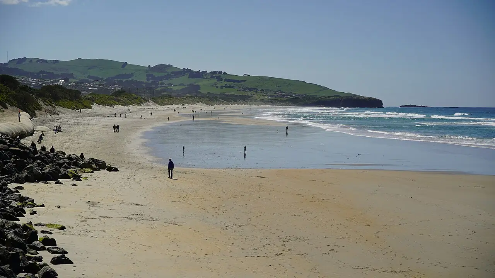

St Clair
Dunedin, Otago, Nouvelle-Zélande · surf, bodyboard

Plage urbaine de Dunedin exposée à la houle du Pacifique Sud, avec son esplanade et sa piscine d’eau de mer chauffée au bout de la plage. Les bancs de sable offrent des vagues pour plusieurs niveaux.
- Lieu
- Dunedin, Otago, Nouvelle-Zélande
- Niveau
- Intermédiaire
- Activités
- surf, bodyboard
- Type d'eau
- Mer / océan
- Coordonnées
- -45.91, 170.49 (position approximative du secteur)
Dangers à connaître
- Eau froide toute l’année.
- Courants d’arrachement près des rochers de l’extrémité ouest.
Le conseil d'Ocean Buddy
Prévois une combinaison épaisse, cagoule et chaussons l’hiver : l’eau reste froide toute l’année.
Ouvrir dans Ocean Buddy Télécharger sur l'App Store
Source : Fiche Ocean Buddy · septembre 2026 · à vérifier localement.